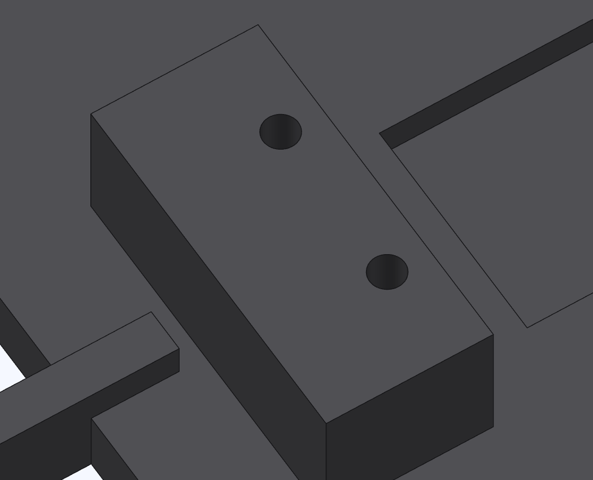
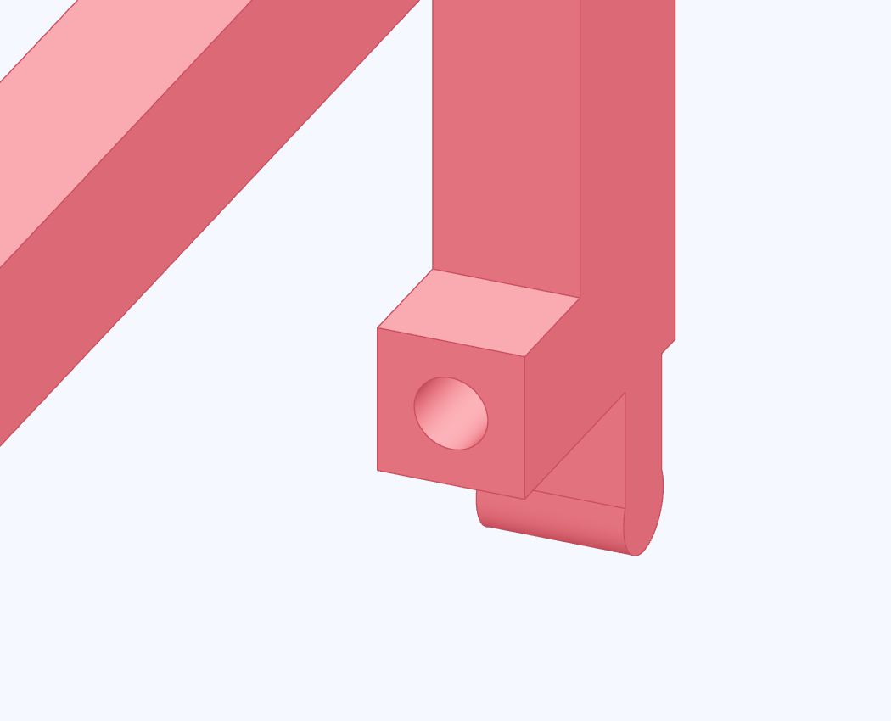

Heat-set the inserts
The cradle's switch pad gets a pair of inserts. The third goes in the end face of the push rod's finger.


- Check the endstop board's mounting holes against the pair on the pad. Clear stray filament from all insert holes.
- Use the heat-set tip to press each ruthex M3 insert in on its own axis. Stop flush with the surrounding face.
- Let the plastic cool. Hand-start the matching screw in each insert.
Check the seating faces
The switch board can lie flat and each screw threads by hand. Clear any raised plastic around the insert before fitting the board.